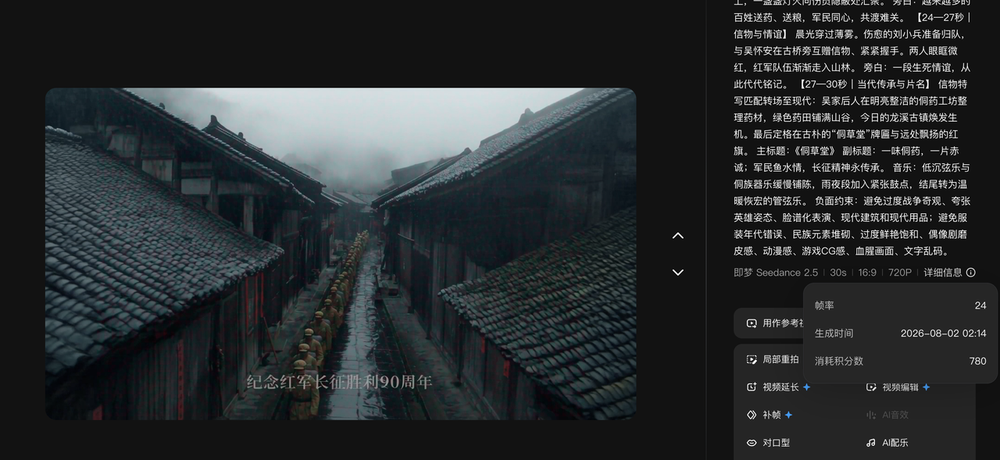
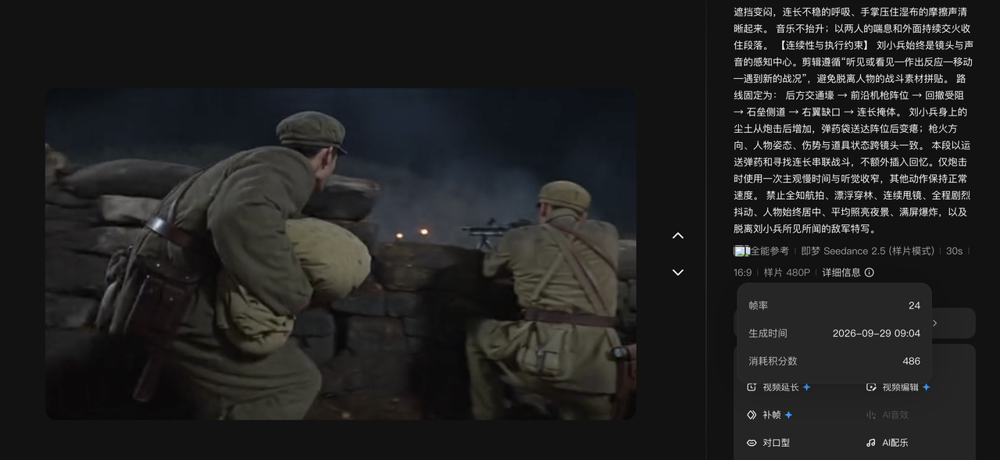
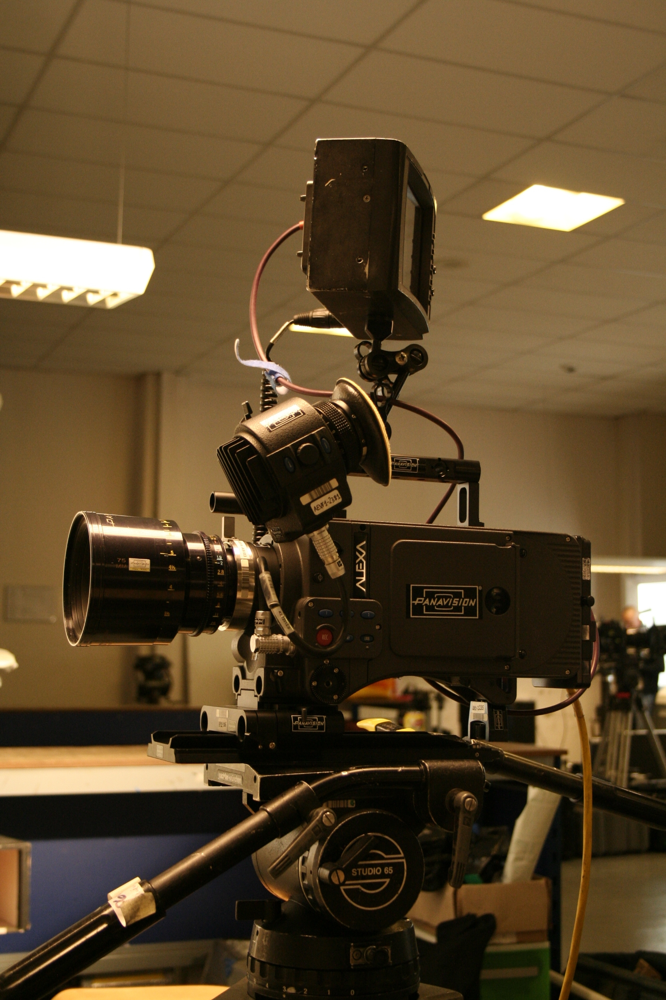

统一质感要求
皮肤、粗布、草药与湿木保留纹理。
表演保持克制，动作保留重量。
光线来自油灯、火把与门窗天光。
飞书 C1 原始样片画面
01 / 故事与人物
一只药箱，承载决定，也连接传承。
背起药箱，穿越封锁，为被困深山的红军伤员送药救治。
情感与传承
他的犹豫、决定与行动，让军民情谊成为可见的细节。药箱与信物，连接往事与当代传承。
故事背景依据原文创作提示词。
02 / 摄影与美术
让材质有纹理，让动作有重量，让光线有来源。
统一质感要求
皮肤、粗布、草药与湿木保留纹理。
表演保持克制，动作保留重量。
光线来自油灯、火把与门窗天光。
广角交代古镇与山林，保留危险与压迫感。
过肩正反打遵守轴线，衔接视线与光线方向。
眼神、手部与信物特写，让情绪落在具体动作上。
03 / 分镜结构
沿着时间线阅读，查看每个段落的叙事任务。

项目原始样片 · 古镇画面
群山、古镇与红军队伍。
画面取自项目原始样片，仅作为对应主题的画面参照。
上方使用原始样片中已有的古镇、侗医与传承画面作为主题参照。段落时长与动作结构沿用原文。
04 / 样片档案
参数与评估沿用原文，画面和文字放在同一个比较框架中。
| 编号 | 内容方向 | 原文参数 | 原文评估 |
|---|
平台均记为即梦，模型参数均记为 2.5。表中保留原文评估，不将其作为已完成优化的证明。
B1 / 创作重点
叙事主线
连长托付、伤势与信物，构成贯穿逃亡段落的连续行动。
先交代坡向与出口，再进入快切。
左臂伤势、布条与收藏动作保持一致。

项目夜战样片画面参考，非 B1 附件。
每幅画面对应其已呈现效果与待优化问题。
05 / 复盘与验收
一张卡片对应一个问题、一项调整和一组检查标准。
画面用于说明检查对象，不作为优化前后对比，也不代表问题已修复。
06 / 制作方法
同一镜头的风格、调度与连续性，需要共同约束。
真实摄影质感，色彩、光源与材质。
镜号、运镜、角度，站位与画面内容。
人物、服装、道具，轴线、视线与运动方向。
人物在哪里，看向哪里，要完成什么动作。
按先后顺序组织六个环节。

声音与剪辑
环境声与配乐
声音先行连接场景，
配乐为人物让出空间。
保留现场的温度。
重要独白用更有情感的配音表达。
后期统一冷暖，保持整体色调。
药铺动作实拍参考 · 槟城
07 / 原始资料
保留原图、完整提示词和培训正文，供汇报后继续查阅。
17个版本节点
5条视频记录
结合左侧图示查看版本分支。五条样片提示词在下方完整收录。
展开可阅读、复制或下载完整文字。
没有找到匹配资料，请换一个关键词。
九张原始截图，区分项目样片与其他示例。点击可放大。
记录包含其他示例，不将九条记录相加作为本项目总成本。
项目生成样片来自原飞书资料，不作为真实历史摄影。外部照片仅作实物、环境、材质或制作方法参考。